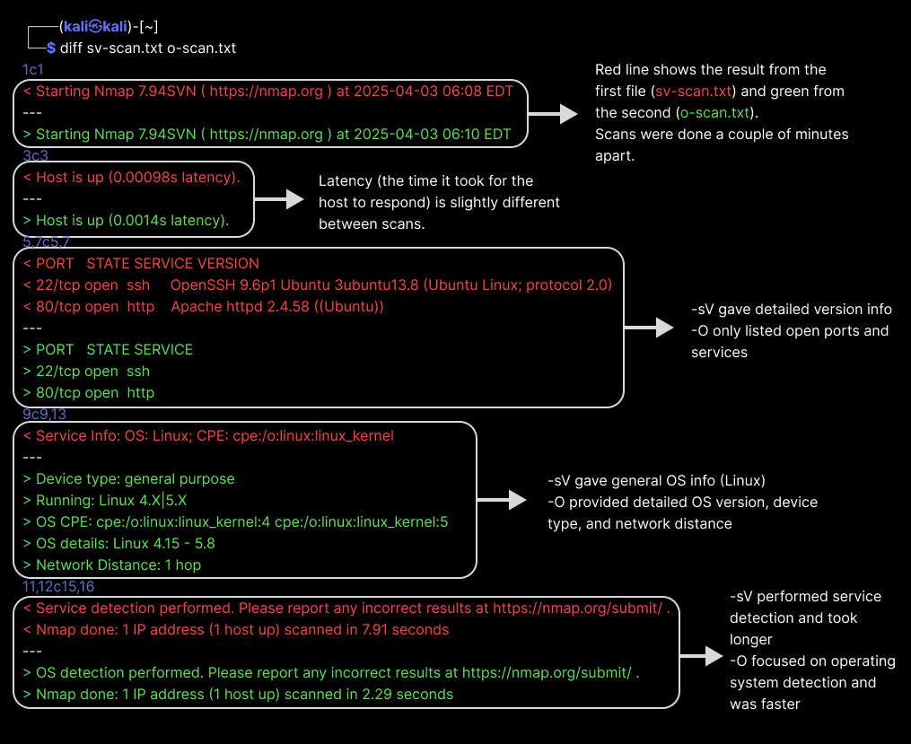

2. Intelligence Gathering
Welcome to the point where real penetration testing begins!
According to PTES — and let's be honest, just plain logic — the first phase of any penetration test is information gathering, also known as reconnaissance. Before jumping into scanning ports or exploiting systems, it's crucial to understand the environment.
We have a virtualization platform, VirtualBox, on which we have installed Kali Linux and a target machine, DaVivianCode-Server. We want to perform a penetration test on the gallery's:
That's pretty much all information we have at the moment. Let's change that!
Your first mission is simple: find out your Kali Linux machine's IP address. Use the following command in the terminal:
ip a
If everything went as expected, you should see something like this:
Look for the IP address next to the network interface eth0. This is the IP address of your Kali machine.
Understanding who you are and where you stand in the network is always the first step in hacking — know yourself before you know the enemy. Well, technically speaking, Da Vivian Code Gallery is not our enemy, we act like the enemy online, but you get the idea.
Once you know your own address, you can search the network for other devices. Type this command into the terminal:
sudo netdiscover
Netdiscover sends ARP requests to find active hosts. Soon after running the command, you should see a list of devices on the network:
TIP: At this stage, take the discovered IP addresses and test them in your Kali Linux browser!
If a website opens, congratulations — you've just identified a web server, and it looks like your target. This is a simple but powerful trick: sometimes the easiest way to recognize a service is just to visit it. Now you know which IP runs the website you were asked to test. This will be important in the next steps of your simulation.
No results? Make sure you are using http connection. If you just enter 192.168.30.6 or your browser tries to use https:// automatically, the page might not load — even if the server is actually running. Here, have this:
http://192.168.30.6
NOTE: Since IP addresses are assigned dynamically by DHCP, the target system may have a different IP address than the one shown in these examples. Be sure to replace the example IP (192.168.30.6) with the one you actually discover using Netdiscover.
Open-source intelligence (OSINT) is a goldmine for hackers. It's the art of collecting information from publicly available sources. It might sound basic, but it's incredibly powerful. You'd be surprised how much you can learn about:
There are plenty tools for OSINT research. Let us try this simple whois experiment. I'll spoil the surprise for you right away: by examining the IP address of the DaVivianCode-Server, we don't find much. So, let's do it for Google.
whois google.com
After running the command, you should see a lot of information about the domain, including the registrar, the domain's expiration date, and the name servers.
If you run whois on your target's private IP (192.168.30.6), you'll get a notice that it's part of a private range — meaning it's not traceable via public databases.
Nmap is your new best friend. It helps identify:
BUT. There's always a but. And when it comes to Nmap, it's a big one. Since I'm teaching this to you, I can't stress this enough:
Never, ever Nmap without permission.
If you run a scan on, say, your bank's website "just to see what's there," you might soon find yourself explaining your curiosity to the police. Seriously. Nmap is a great tool, but it's only meant for responsible use. It's also noisy. It won't go unnoticed, you'll get caught. You have been warned.
Scared enough yet? Nah, don't worry. You have broad permission to scan and explore Da Vivian Code Gallery's server and website. And even if you overstep your privileges a little — say, by practicing something like installing a backdoor — nothing bad will happen. This is a training environment — a game. However, I recommend that you follow the script to learn the most important rule in real-life pen testing: stick to the contract.
OK, back to our mission! Now that you've found your target's IP address, it's time to actually learn something about the system. And that's where Nmap truly shines.
Let's kick things off with a basic scan — no extra options, just the essentials:
Basic TCP scan: This checks which ports on the target are open and listening.
nmap 192.168.30.6
And there it is — our very first Nmap result! 🎉
Not too scary, right? No overwhelming wall of text — just a clean, beginner-friendly output. It proves to you that I'm a kind simulator designer. Or maybe I just didn't have time to make it more complex.
Even though the results are short, they already reveal a lot of useful information.
💡 These are common services and can be great entry points for further exploration or analysis. Lesson to Learn: Just because the output is short doesn't mean it's useless. Sometimes fewer results just mean less noise — and that helps you focus.
Reading scan results can be tricky at first — but now that you've run your first basic Nmap scan, let's take it a step further. This time, we'll not only scan — we'll also save the results for later use.
Let's pick two different types of Nmap scans to explore. Out of Nmap's many possibilities, we're going with -sV and -O. Why these two? Because they give us more detail — and also, because I said so. OK, let's take a closer look:
Version detection (nmap -sV) tries to find out what service (and which version) is running on each open port. Let's run and save this scan.
nmap -sV 192.168.30.6 > sv-scan.txt
You can view the saved results by reading the txt file you just created:
cat sv-scan.txt
☝ Before we analyze anything, let's add one more scan to the mix.
OS detection (nmap -O) tries to identify what operating system the target is running:
nmap -O 192.168.30.6 > o-scan.txt
Again, use cat to check the output.
Look at your results and think about how they differ from each other. Next, we will compare them together, using one very handy tool.
While diff isn't usually thought of as a pentesting tool, it's actually super handy. We can use it to compare scan results and quickly see what's new or different. At this point we focus on what's different, with this simple command:
diff sv-scan.txt o-scan.txt
The diff tool will highlight any differences between the scan results, helping you understand what each scan reveals.
Easy, right? Probably not, when you're just starting out in this business. But that's okay — we'll walk through it together, with this image:
Key Takeaway: Different Nmap options reveal different types of information. This comparison shows why it's important to choose the right scan depending on what you want to find out. Diff is a great tool for quickly spotting those differences. It's also useful for tracking changes over time — for example, if you run the same scan regularly and want to see what has changed.
And now you also know how to save your scan results as files! This is super useful for later analysis or reporting.
Now you know that it is possible to use Nmap for targeted results. But if you want, it is possible to get everything at once! There is a tool for that:
This command is like asking Nmap to "show me everything you've got." It enables:
Here we go:
sudo nmap -A 192.168.30.6
After running the command, you should see a lot of information about the target system. While your results may differ slightly, you might already notice some familiar elements from previous scans. I've highlighted a few details in this image that are worth paying attention to:
Great job! We already know much more about our target than when we started. Finally, let's summarize what we learned so far.
Okay, take a little break before we move on to the next step, which is: